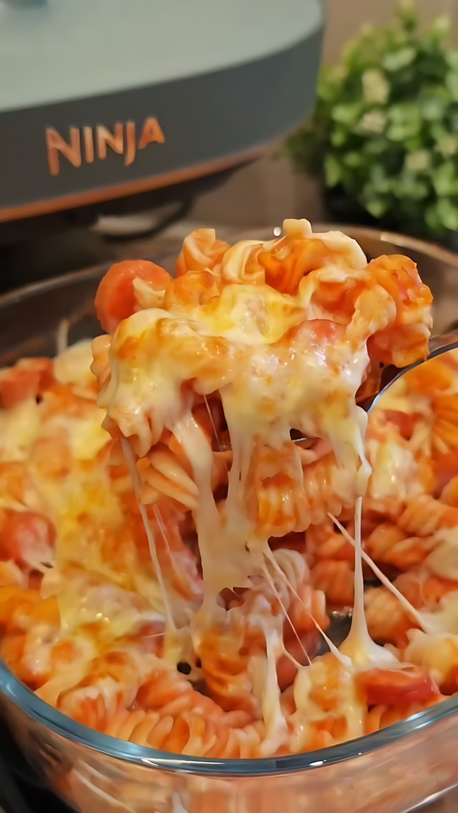

Anzeige
 AnzeigeNinja CRISPi PRO XL · MoosgrünDie Glas-Heißluftfritteuse aus dem Video.Produkt ansehen ↗
AnzeigeNinja CRISPi PRO XL · MoosgrünDie Glas-Heißluftfritteuse aus dem Video.Produkt ansehen ↗
Cremiger Nudelauflauf mit Wiener Würstchen und würziger Currysauce aus meiner Ninja
Cremiger Nudelauflauf mit Wiener Würstchen und würziger Currysauce aus meiner Ninja CrispiPro Ein schnelles, einfaches und unglaublich leckeres Familienessen
- 8 Zutaten
- 4 Schritte
Zur Zubereitung Video ansehen ↗
Zutaten
- Für die Sauce
AnzeigeNinja CRISPi PRO XL · MoosgrünDie Glas-Heißluftfritteuse aus dem Video.Produkt ansehen ↗Als Amazon-Partner verdiene ich an qualifizierten Verkäufen.
Zubereitung
- Gekochte Nudeln, geschnittene Wiener Würstchen und die vorbereitete Sauce direkt im Behälter der Ninja CrispiPro miteinander vermischen. Mit geriebenem Käse bestreuen und bei 190 °C für ca. 8–10 Minuten überbacken, bis der Käse geschmolzen und goldbraun ist.
- So einfach, so cremig und so lecker!
- BLACK FRIDAY IST DA! Hol dir deine Ninja CrispiPro bei Amazon über meinen Link in der Bio – solange das Angebot läuft!
- ad #snamazonaffiliate #ninjacrispipro #würstchen #pasta